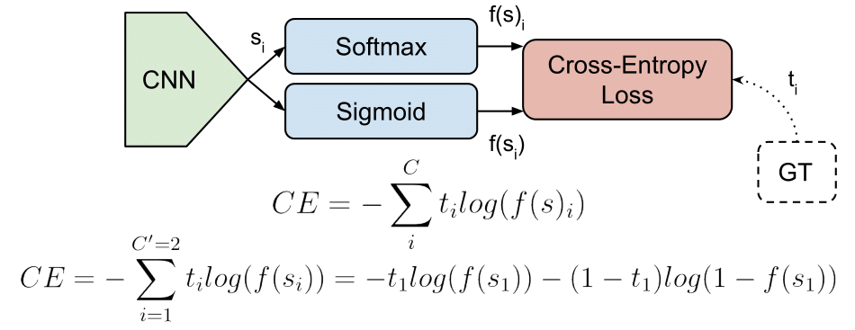
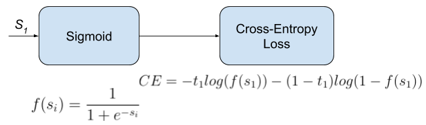
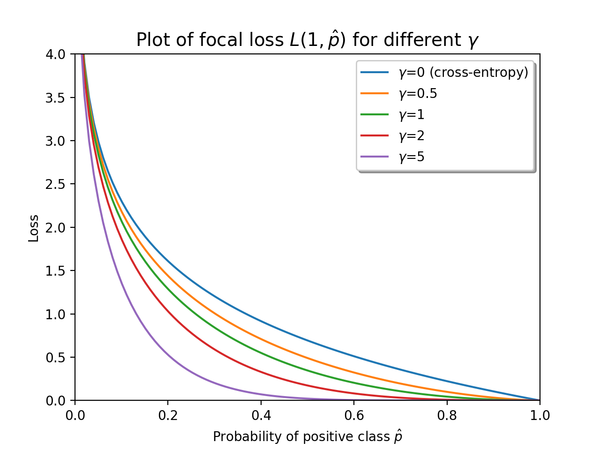

Cross-Entropy Loss 中文翻译为交叉熵损失，是一种常用的损失函数，但在不同的论文与机器学习框架中常会被叫做不同的名字，本文将对这些令人迷惑的名称以及一些其他常见的损失函数进行说明。

首先说明一些概念
分类任务
按照标签类型不同进行区分
Multi-Class Classification多类别分类
每个目标只属于一个类别。若总计有数目为$C$的类别，CNN网络的输出（Scores）将会是一个维度为$C$的向量$s$。输入样本对应的标签或真实值（groundtruth）是一个one-hot vector，只有目标类别为1，其余$C-1$类均为0。
Multi-Label Classification多标签分类
s
每个目标可以属于多个类别。例如，某样本可以同时属于human和woman两个类别。若总计有数目为$C$的类别，CNN网络的输出（Scores）与上述任务相同，是一个$C$维的向量$s$。不同的是，输入样本的标签将有多个1值，代表目标属于多个种类。

输出层激活函数
通常在计算loss之前会作用在CNN结果向量$s$上的激活函数
Sigmoid
一种常见的激活函数，效果是可以将任意数值限制在（0，1）区间之内。使用时会作用于向量$s$的每一个元素$s_{i}$也被称为logistic function。
Softmax
首先需要明确的是，单独的Softmax是一种函数而非一种loss。它的效果是让输入向量$s$的每一个元素$s_{i}$都处于（0，1）区间之内，并且各元素之和为1。
上式中，$C$为输出向量维度
训练过程和预测中都会在输出向量后使用激活函数
各种Loss函数
Cross-Entropy Loss交叉熵损失函数
事实上，这里讨论所有Loss的都是Cross-Entropy家族里面的成员。交叉熵损失CE Loss定义为：
其中$t{i}$和$s{i}$代表的是label向量$t$和CNN预测的向量$s$的对应元素。在计算CE损失前，通常会有一个激活函数(sigmoid/softmax)$f$作用于输出向量上。
在二元分类问题中（即目标只需判断属于或不属于，$C=2$）,CE Loss也会被写作Binary Cross-Entropy Loss:
Logistic Loss和Multinomial Logistic Loss是Cross-Entropy Loss的别称。
对应机器学习框架中一些不带有激活函数的：
- Caffe：Multinomial Logistic Loss Layer。仅限于Multi-Class Classification问题，不支持Multi-Labels。
- PyTorch：BCELoss。仅限于二元分类。
- TensorFlow：log_loss
Categorical Cross-Entropy Loss分类交叉熵损失函数
该损失函数也被叫做Softmax Loss，可以认为是Softmax和Cross-Entropy Loss两个函数的叠加。专门用于处理Multi-Class问题，输出向量的每一个元素代表每一种类别的概率。

由于Multi-Class的label是一个one-hot vector，因此计算损失的时候只需要计算$t{i}=t{p}=1$那一项，其余的交叉熵由于label元素为0而乘积都为0，不需要计算
上式中$s_{p}$是输出结果中对应真实类别的那一项
定义了Softmax Loss后就会进行反向传播的梯度计算，虽然Loss中的分母只有$s{p}$ , 但是需要对输出层每一个neuron计算gradient，因为损失分母中仍然存在着这些项目。梯度计算分为对非零元素$s{p}$以及对其他零元素
对$s_{p}$
对$s_{n}$
对应机器学习框架中：
- Caffe：SoftmaxWithLoss Layer。仅限于Multi-Class Classification问题，不支持Multi-Labels。
- PyTorch：CrossEntropyLoss。仅限Multi-Class问题
- TensorFlow：softmax_cross_entropy。仅限Multi-Class问题
Binary Cross-Entropy Loss
前面已经简单提到了BCE这种形式，它也被叫做Sigmoid Cross-Entropy Loss。

形式是比较清晰明了的，输出和真实值实际上只有一个$s{1}$和$t{1}$，但是因为是二分类问题，在$label t{1}=0$的时候也要计算损失，因而存在一个隐含的元素$s{2}, s{1}+s{2}=1$
计算梯度：
Focal Loss
Focal Loss是由Facebook Lin et al.提出的一种损失函数，RetinaNet使用了这种损失函数。Focal Loss是一种交叉熵损失函数，它能够根据分类结果调整损失函数各部分的权重。基本思路是：如果样本已经被CNN正确的标注，那么它对于Loss的贡献或者说权重比例将会降低，作者认为这种策略可以帮助算法集中精力在哪些被错误分类的样本上。
Focal Loss使用了sigmoid激活函数，因此可以FL也可以被视作一个Binary Cross-Entropy Loss。FL定义如下：
$\gamma>=0$是一个调节因子，$\gamma=0$时FL退化为BCE

由图上可以看出，对于概率越小的情况，Focal Loss中的$\gamma$对于正确分类样本的Loss降低越为明显。
总结
本文提及的诸多LossFunction都由最基本的Cross-Entropy Loss演化得到，在不同的框架中他们有着不同的名字。
- Cross-Entropy Loss
- 别名:Logistic Loss & Multinomial Logistic Loss,最基本的形式
- Categorical Cross-Entropy Loss
- 别名:Softmax Loss = Softmax+CE
- Binary Cross-Entropy Loss
- 别名:Sigmoid Cross-Entropy Loss = Sigmoid+CE
- Focal Loss
- 在CE每一个项目前增加了系数因子